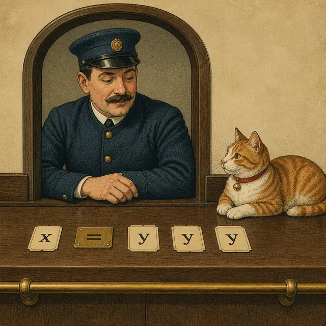
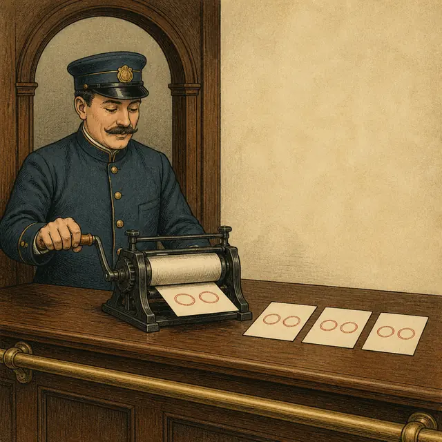
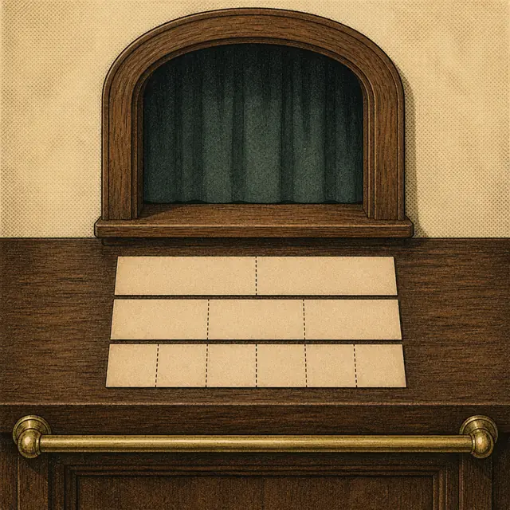

課前暖身漫畫：一張收據不夠，那就兩張
小翊拿著手上那張收據算了半天：\(3\) 張全票、\(1\) 張優待票，付了 \(210\) 元。全票 \(70\) 元、優待票 \(0\) 元？可以。全票 \(60\) 元、優待票 \(30\) 元？也可以。全票 \(50\) 元、優待票 \(60\) 元？還是可以——一張收據怎麼算都算不出票價。這時小妍從口袋裡掏出另一張：\(5\) 張全票、\(2\) 張優待票，付了 \(360\) 元。售票員把兩張收據上下並排夾在木夾板上，左緣扣上一支大括號同時夾住兩張：「兩張一起看，票價就跑不掉了。」果然，能同時對上兩張收據的價錢只剩一組——全票 \(60\) 元、優待票 \(30\) 元。一條式子綁不住兩個未知數，兩條就可以。
重點 1：二元一次聯立方程式——兩條式子綁在一起
重點整理與敘述
- 定義：把兩個二元一次方程式並列在一起，寫成 \[\begin{cases} 5x+2y=360 \\ 3x+\ \ y=210 \end{cases}\] 的形式，就稱為二元一次聯立方程式，也叫二元一次方程組。
- 大括號的意思是「同時」：不是兩條各自獨立的題目，而是要求同一組 \(x\)、\(y\) 把兩條式子一起滿足。
- 兩條式子必須講同一組未知數。第①式的 \(x\) 是全票價，第②式的 \(x\) 也必須是全票價，不能一條講門票、一條講飲料。
- 列式三步驟：
- ① 設未知數：先寫「設全票每張 \(x\) 元、優待票每張 \(y\) 元」，講清楚誰是誰。
- ② 一句話列一條式子：題目給了幾個數量關係，就列幾條方程式。
- ③ 並列：用大括號把兩條框起來。
- 兩條式子常常來自兩種不同的「總量」。以「汽車與機車共 \(30\) 輛、輪子共 \(86\) 個」為例，一條來自輛數、一條來自輪子數： \[\begin{cases} x+y=30 \\ 4x+2y=86 \end{cases}\] 兩條式子問的是同一批車，只是從兩個角度數。
- 順序一樣不能亂配（上一節的老問題）。設反了 \(x\)、\(y\)，兩條式子的係數要整組跟著換位置，不能只換一條。
| 題目的一句話 | 翻成方程式 |
|---|---|
| 買 \(5\) 張全票、\(2\) 張優待票，共 \(360\) 元 | \(5x+2y=360\) |
| 買 \(3\) 張全票、\(1\) 張優待票，共 \(210\) 元 | \(3x+y=210\) |
| 汽車與機車共 \(30\) 輛 | \(x+y=30\) |
| 輪子共 \(86\) 個（汽車 \(4\) 輪、機車 \(2\) 輪） | \(4x+2y=86\) |
視覺互動探索：兩張收據列式台
選一個情境，再選「\(x\) 要設誰」。拉滑桿改變第二張收據的數量，看兩條式子怎麼被夾成一組：
形成性評量 (二元一次聯立方程式)
Q1. 文具店的筆記本每本 \(x\) 元、原子筆每枝 \(y\) 元。小美買 \(4\) 本筆記本和 \(3\) 枝原子筆，共付 \(275\) 元；小華買 \(2\) 本筆記本和 \(5\) 枝原子筆，共付 \(225\) 元。依題意列出的二元一次聯立方程式是下列何者？
解析：答案為 C。題目先說「筆記本每本 \(x\) 元」，所以 \(x\) 是筆記本的價錢，一句話列一條式子：
\[\begin{aligned}
& \text{小美：} 4x+3y=275 \\
&\quad \text{小華：} 2x+5y=225
\end{aligned}\]
B 把兩種商品的順序整組寫反了，等於偷偷把 \(x\) 換成原子筆的價錢。
A 的兩個總價對調了，收據跟金額配錯人。
D 把小美的原子筆數 \(3\) 和小華的筆記本數 \(2\) 交換了，兩條式子都不是原本那張收據。
Q2. 停車場裡有汽車 \(x\) 輛、機車 \(y\) 輛，兩種車共 \(30\) 輛；已知汽車有 \(4\) 個輪子、機車有 \(2\) 個輪子，所有車的輪子共 \(86\) 個。依題意列出的二元一次聯立方程式是下列何者？
解析：答案為 A。兩條式子分別從兩個角度數同一批車：
\[\begin{aligned}
& \text{數輛數：} x+y=30 \\
&\quad \text{數輪子：} 4x+2y=86
\end{aligned}\]
B 把兩條式子的常數對調，變成「輛數有 \(86\)、輪子有 \(30\)」。
C 把輪子數配錯車：汽車是 \(4\) 輪，係數要跟著 \(x\) 走。
D 兩條式子的左邊一模一樣、右邊卻不同，同一批車不可能既是 \(86\) 個輪子又是 \(30\) 個輪子。
重點 2：解＝共同解——兩個等號要一起成立
重點整理與敘述
- 定義：能同時讓聯立方程式裡兩個方程式的等號都成立的 \(x\)、\(y\) 值，就是這個二元一次聯立方程式的解，也叫兩式的共同解。
- 「共同」兩個字是重點。上一節學過，一條二元一次方程式有無限多組解；兩條式子各自的無限多組解裡，能同時出現在兩邊的那一組，才是聯立方程式的解。
- 檢驗方法（代入法）：把一組 \(x\)、\(y\) 成對代進兩條式子，兩邊各自算一次：
- 兩條都成立 → 是解。
- 只成立一條 → 不是解。這是最常見的失分點。
- 成對是關鍵：不能 \(x\) 拿 A 選項的、\(y\) 拿 B 選項的。一組解是綁在一起的兩個數，記作 \(\begin{cases} x=60 \\ y=30 \end{cases}\)。
- 題目給選項時，列表最快。橫欄放 \(x\)、\(y\)，直欄放兩條方程式，一格一格填「是」或「否」，兩格都是「是」的那一列就是答案。
- 本章只處理有唯一一組解的情況：兩條式子擺在一起之後，共同解剛好只有一組。
| 候選 | \(x\) | \(y\) | \(2x+y=8\) | \(x-y=1\) |
|---|---|---|---|---|
| A | \(1\) | \(6\) | 是 | 否 |
| B | \(3\) | \(2\) | 是 | 是 |
| C | \(4\) | \(0\) | 是 | 否 |
三個候選都讓第一條成立，但只有 B 連第二條也成立——所以只有 B 是這個聯立方程式的解。
視覺互動探索：雙閘門驗票機
拉兩支滑桿決定一組 \(x\)、\(y\)，同時送進兩台閘門。兩台都開才算是這個聯立方程式的解：
形成性評量 (聯立方程式的解)
Q1. 下列各組數中，哪一組是二元一次聯立方程式 \(\begin{cases} x+2y=9 \\ 3x-y=13 \end{cases}\) 的解？
解析：答案為 B。四組都要成對代進兩條式子： \[\begin{aligned} & \text{A}：1+2(4)=9\ \checkmark \\ &\qquad 3(1)-4=-1 \ne 13 \\ & \text{B}：5+2(2)=9\ \checkmark \\ &\qquad 3(5)-2=13\ \checkmark \\ & \text{C}：3+2(3)=9\ \checkmark \\ &\qquad 3(3)-3=6 \ne 13 \\ & \text{D}：4+2(-1)=2 \ne 9 \end{aligned}\] A、C 都讓第一條成立，D 讓第二條成立，但它們都只過了一關。只有 B 兩條都成立，所以只有 B 是共同解。
Q2. 關於二元一次聯立方程式的「解」，下列敘述何者正確？
解析：答案為 D。「聯立」的意思就是同時——大括號要求同一組 \(x\)、\(y\) 把兩條式子一起滿足。
A 少了「同時」。只過一關的組合多得是（\(2x+y=8\) 光是 \(x=1,y=6\)、\(x=3,y=2\)、\(x=4,y=0\) 就都成立），它們大部分都不是共同解。
C 剛好講反了。兩式各自的解是無限多組，聯立方程式的解是這兩堆解的共同部分，不是全部加起來。
B 錯在只寫一半。一組解是 \(x\)、\(y\) 綁在一起的兩個數，要寫成 \(\begin{cases} x=5 \\ y=2 \end{cases}\)。
重點 3：代入消去法——把兩個未知數換成一個
重點整理與敘述
- 整節的核心動作只有一個：想辦法消去一個未知數，把聯立方程式變成會解的一元一次方程式。變成一元之後，等量公理和移項法則就都能用了。
- 代入消去法：把其中一式整組搬進另一式，取代掉那個未知數，藉此消去它。
- 什麼時候最好用：其中一式已經長成 \(x=\cdots\) 或 \(y=\cdots\)（等號一邊只剩一個未知數）的樣子，可以直接搬。
- 五個步驟：
- ① 標序號①、②，後面每一步都要講清楚用了哪一式。
- ② 代入：把①式的整組式子搬進②式，換掉那個未知數。
- ③ 解一元一次，求出第一個未知數的值。
- ④ 回代：把求到的值代回去，求另一個未知數。
- ⑤ 驗算（可略）：兩式都代一次確認。
- 搬的是一整組，一定要加括號。由 \(y=5-2x\) 代入 \(3x+2y=8\) 時要寫 \[\begin{aligned} & 3x+2(5-2x)=8 \\ &\quad 3x+10-4x=8 \end{aligned}\] 漏掉括號寫成 \(3x+2\times 5-2x\) 就只乘到第一項，整題就錯了。
- 回代哪一式都可以，答案一樣——因為解是共同解，本來就要讓兩式同時成立。代進式子比較短的那一條最省事。

視覺互動探索：代入消去法逐步機
選一組聯立方程式，按「下一步」一格一格看代入怎麼把兩個未知數變成一個：
形成性評量 (代入消去法)
Q1. 用代入消去法解 \(\begin{cases} y=2x \\ 3x+y=25 \end{cases}\)，所得的解為何？
解析：答案為 B。①式已經是 \(y=2x\)，把 \(2x\) 整組搬進②式取代 \(y\)：
\[\begin{aligned}
& 3x+2x=25 \\
&\quad 5x=25 \\
&\quad x=5
\end{aligned}\]
回代①式得 \(y=2\times 5=10\)。
A 把 \(x\)、\(y\) 的值寫反了——\(y=2x\) 說的是 \(y\) 比較大。
C 誤把 \(y\) 算成 \(25-5\)。
D 沒有消去未知數，直接把 \(25\) 當成 \(x\)。
Q2. 用代入消去法解 \(\begin{cases} y=4-3x \\ 2x+3y=5 \end{cases}\)，所得的解為何？
解析：答案為 A。\((4-3x)\) 是一整組，代入時必須加括號：
\[\begin{aligned}
& 2x+3(4-3x)=5 \\
&\quad 2x+12-9x=5 \\
&\quad -7x=-7 \\
&\quad x=1
\end{aligned}\]
回代①式得 \(y=4-3\times 1=1\)。
B 正是漏掉括號的結果——寫成 \(2x+3\times 4-3x=5\)，\(3\) 只乘到第一項，於是
\(-x+12=5\)、\(x=7\)，再回代得 \(y=4-21=-17\)，整題全錯。
C 的 \(x\) 對了但 \(y\) 的符號弄反，代回①式得 \(4-3=1 \ne -1\)。
D 兩式都不成立，代進去就知道。
重點 4：兩式都不現成——先整理，再代入
重點整理與敘述
- 問題：重點 3 那種「其中一式已經是 \(x=\cdots\)」是運氣好。像 \(\begin{cases} x+4y=-1 \\ 5x-y=16 \end{cases}\) 這樣兩式都不現成時，代入法還能用嗎？
- 可以，先自己整理出一個。挑一式、挑一個未知數，用移項法則把它整理成 \(x=cy+d\) 或 \(y=ax+b\) 的樣子，標上新序號③，再照重點 3 的步驟代入。
- 挑哪一個？看係數。挑係數是 \(1\) 或 \(-1\) 的那一項，整理出來不會有分數： \[\begin{aligned} & \text{由①式（}x\text{ 的係數是 } 1\text{）} \\ &\quad x=-1-4y \quad \cdots\cdots ③ \end{aligned}\]
- 不只一條路，而且都對。這一題由②式解 \(y\)（係數是 \(-1\)）也一樣好：\(y=5x-16\)。兩種整理法都能求出同一組解，只是式子長得不一樣。
- 係數不是 \(\pm 1\) 時仍然可以，只是會出現分數。例如由 \(5x-y=16\) 解 \(x\) 會得到 \(x=\dfrac{16+y}{5}\)，代進去要通分，計算量明顯變大——這時候換用加減消去法（重點 5、6）通常比較省事。
- 整理時別忘了移項要變號：\(x+4y=-1\) 把 \(4y\) 移到右邊，變成 \(x=-1-4y\)，符號從 \(+\) 變 \(-\)。
- 回代要代進整理後的③式最省事，因為它已經是 \(x=\cdots\) 的樣子，代一個數就算得出來。
| 從哪一式、解哪一個 | 整理出來的③式 | 好不好用 |
|---|---|---|
| ①式解 \(x\)（係數 \(1\)） | \(x=-1-4y\) | 最省事 |
| ②式解 \(y\)（係數 \(-1\)） | \(y=5x-16\) | 一樣省事 |
| ①式解 \(y\)（係數 \(4\)） | \(y=\dfrac{-1-x}{4}\) | 會有分數 |
| ②式解 \(x\)（係數 \(5\)） | \(x=\dfrac{16+y}{5}\) | 會有分數 |
視覺互動探索：整理路線選擇台
四條路線都能解出同一組答案，但省事的程度差很多。先選一條路線，再按「下一步」走完：
形成性評量 (先整理再代入)
Q1. 要用代入消去法解 \(\begin{cases} 2x+y=11 \quad \cdots ① \\ 3x-4y=-11 \quad \cdots ② \end{cases}\)，下列哪一種整理方式最省事（整理後不會出現分數）？
解析：答案為 C。整理前先掃一遍四個係數：\(2\)、\(1\)、\(3\)、\(-4\)，只有①式的 \(y\) 係數是 \(1\)，把它解出來不必除以任何數：
\[\begin{aligned}
& 2x+y=11 \\
&\quad y=11-2x
\end{aligned}\]
B、A、D 三條路都算得出正確答案，不是錯的做法，但係數分別是 \(2\)、\(3\)、\(-4\)，解出來都要除，於是帶著分數代進另一式，計算量明顯變大。
整理前先找係數 \(\pm 1\) 的那一項，是代入消去法最實用的一個習慣。
Q2. 用代入消去法解 \(\begin{cases} x-3y=7 \\ 2x+5y=3 \end{cases}\)，所得的解為何？
解析：答案為 D。①式的 \(x\) 係數是 \(1\)，先解出 \(x\)（移項要變號）：
\[\begin{aligned}
& x=7+3y \quad \cdots\cdots ③ \\
&\quad 2(7+3y)+5y=3 \\
&\quad 14+6y+5y=3 \\
&\quad 11y=-11 \\
&\quad y=-1
\end{aligned}\]
回代③式得 \(x=7+3\times(-1)=4\)。
B 的 \(y\) 符號弄反，代回①式得 \(4-3=1 \ne 7\)。
C 的 \(x\) 正負號弄反，代回①式得 \(-4+3=-1 \ne 7\)。
A 只讓第一條成立（\(7-0=7\)），第二條 \(2\times 7+0=14 \ne 3\)，不是共同解。
重點 5：加減消去法——什麼時候加、什麼時候減
重點整理與敘述
- 從夜市那兩張收據說起：小翊買 \(3\) 串玉米 \(3\) 杯紅茶付 \(210\) 元，小妍買 \(3\) 串玉米 \(5\) 杯紅茶付 \(250\) 元。玉米數量一樣，兩張收據一相減，玉米就整個消失了，只剩「多買的 \(2\) 杯紅茶多花 \(40\) 元」。
- 加減消去法：把兩個方程式整條相加或相減，讓某個未知數的項互相抵消，藉此消去它。跟代入消去法的目的完全一樣，只是手法不同。
- 判準只有兩條（來自課本的問題探索）：
- 某個未知數的係數互為相反數（如 \(5y\) 與 \(-5y\)）→ 用加法消去。
- 某個未知數的係數相同（如 \(2x\) 與 \(2x\)）→ 用減法消去。
- 最容易記反的地方：看到一正一負就想相減。其實 \(y\) 與 \(-y\) 要相加才會變成 \(0\)；相減反而變成 \(2y\)，什麼都沒消掉。
- 相減時整條都要變號，右邊的常數也不例外。這就是上一節去括號那條規則：\((3x+5y)-(3x+3y)\) 等於 \(3x+5y-3x-3y\)。
- 寫成直式，同類項上下對齊：\(x\) 項對 \(x\) 項、\(y\) 項對 \(y\) 項、常數對常數，對齊之後一眼就看得出誰會被消掉。
- 消去之後照舊：解出一元一次方程式，再回代求另一個未知數。
| 兩式中某未知數的係數 | 要用 | 結果 |
|---|---|---|
| \(5y\) 與 \(-5y\)（互為相反數） | 相加 ①＋② | \(5y+(-5y)=0\) |
| \(2x\) 與 \(2x\)（相同） | 相減 ①－② | \(2x-2x=0\) |
| \(5y\) 與 \(-5y\)，卻用相減 | 消不掉 | \(5y-(-5y)=10y\) |
| \(2x\) 與 \(2x\)，卻用相加 | 消不掉 | \(2x+2x=4x\) |
視覺互動探索：直式加減台
拉滑桿改變兩式中 \(y\) 的係數，再選相加或相減。看什麼時候 \(y\) 真的被消掉：
形成性評量 (加還是減)
Q1. 解 \(\begin{cases} 3x+2y=16 \quad \cdots ① \\ 5x-2y=8 \quad \cdots ② \end{cases}\) 時，要消去 \(y\) 應該怎麼做？消去後會得到什麼？
解析：答案為 A。\(y\) 的係數是 \(2\) 和 \(-2\)，互為相反數，所以要用加法：
\[\begin{aligned}
& (3x+2y)+(5x-2y)=16+8 \\
&\quad 8x+0=24 \\
&\quad 8x=24
\end{aligned}\]
B 用了減法，\(2y-(-2y)=4y\)，\(y\) 根本沒消掉，而且 \(x\) 項算成 \(3x-5x=-2x\)、常數是 \(16-8=8\)，整條都不對。
C 的運算對，但把 \(2y+(-2y)\) 誤算成 \(4y\)——相反數相加是 \(0\)。
D 的結果剛好寫對，但寫成①－②是錯的；用減法算出來的其實是 \(-2x+4y=8\)。
Q2. 解 \(\begin{cases} 4x+3y=18 \quad \cdots ① \\ 4x-y=2 \quad \cdots ② \end{cases}\) 時，小明說：「由①＋②可以消去 \(x\)。」這個說法是否正確？
解析：答案為 B。兩式的 \(x\) 係數都是 \(4\)，相同就要用減法：
\[\begin{aligned}
& (4x+3y)-(4x-y)=18-2 \\
&\quad 4y=16 \\
&\quad y=4
\end{aligned}\]
A 是最常見的誤判。相加會得到 \(8x+2y=20\)，\(x\) 完全沒有消掉。
C 不必再乘。係數已經相同，直接相減就好。
D 說反了。這一題 \(x\) 的係數相同，消 \(x\) 最方便；\(y\) 的係數是 \(3\) 與 \(-1\)，反而要先把②×3 才消得掉（那是重點 6 的事）。
重點 6：係數不合——先乘倍數把它對齊
重點整理與敘述
- 問題：重點 5 的兩條判準要求係數「相同」或「互為相反數」。像 \(\begin{cases} 5x-2y=-4 \\ 3x+4y=8 \end{cases}\) 這樣兩個都不符合，怎麼辦？
- 自己把它變成符合的。等量公理說：一條方程式兩邊同乘一個不為 \(0\) 的數，等號仍然成立。所以我們可以把整條式子乘上倍數，把係數「調」到對得齊。
- 情形一：一個係數是另一個的倍數 → 只要乘一式。上面那組 \(y\) 的係數是 \(-2\) 與 \(4\)，把①×2 得 \(-4y\)，就和 \(4y\) 互為相反數了： \[\begin{aligned} & ① \times 2：10x-4y=-8 \\ &\quad ②：\ \ \ \ \ \ 3x+4y=8 \\ &\quad \text{相加：} 13x=0 \end{aligned}\]
- 情形二：兩個係數互質 → 兩式各乘，取最小公倍數。\(\begin{cases} 3x+5y=8 \\ 4x+3y=7 \end{cases}\) 想消 \(x\)，\([3,4]=12\)，所以①×4、②×3，兩邊都變成 \(12x\)，相同就用減法。
- 乘完之後回到重點 5 的判準：係數變成相同就相減、變成相反數就相加。順序是先對齊、再加減。
- 乘的時候每一項都要乘，右邊的常數也不例外。只乘左邊是最常見的錯。
- 消 \(x\) 或消 \(y\) 都可以，挑公倍數比較小的那一個算起來輕鬆。上面第二組消 \(y\) 要用 \([5,3]=15\)，比消 \(x\) 的 \(12\) 大一點。
- 不用最小公倍數也不算錯。直接把兩個係數相乘（\(3 \times 4=12\)、\(5 \times 3=15\)）當公倍數同樣解得出來，只是數字大一些。

視覺互動探索：係數對齊工作台
拉滑桿改變兩式中 \(x\) 的係數，看看要把哪一式乘幾倍才對得齊、對齊後該用加還是減：
形成性評量 (乘倍數對齊)
Q1. 用加減消去法解 \(\begin{cases} x+3y=10 \quad \cdots ① \\ 2x-5y=-13 \quad \cdots ② \end{cases}\)，下列哪一個做法可以消去 \(x\)？
解析：答案為 C。\(x\) 的係數是 \(1\) 與 \(2\)，\(2\) 是 \(1\) 的倍數，所以只要乘一式：①×2 得 \(2x+6y=20\)。這時兩式的 \(x\) 係數都是 \(2\)（相同），要用減法：
\[\begin{aligned}
& (2x+6y)-(2x-5y) \\
&\quad {}= 20-(-13) \\
&\quad 11y=33
\end{aligned}\]
B 用了加法，\(2x+2x=4x\)，\(x\) 沒有消掉。
A 沒有先對齊，\(x+2x=3x\) 也消不掉。
D 的兩個乘數是拿 \(y\) 的係數 \(3\) 與 \(5\) 湊的，①×5、②×3 之後 \(y\) 的係數變成 \(15\) 與 \(-15\)，相加消掉的是 \(y\) 不是 \(x\)——做法本身沒錯，只是消錯了對象。
Q2. 用加減消去法解 \(\begin{cases} 3x+2y=12 \quad \cdots ① \\ 5x+3y=19 \quad \cdots ② \end{cases}\)，若要消去 \(y\)，最省事的做法是下列何者？
解析：答案為 D。\(y\) 的係數是 \(2\) 與 \(3\)，互質，取 \([2,3]=6\)：①要乘 \(\frac{6}{2}=3\)、②要乘 \(\frac{6}{3}=2\)。
\[\begin{aligned}
& ① \times 3：9x+6y=36 \\
&\quad ② \times 2：10x+6y=38 \\
&\quad \text{相減：} -x=-2
\end{aligned}\]
B 把兩個乘數配錯式子了：①×2 得 \(4y\)、②×3 得 \(9y\)，根本對不齊。
C 乘數對，但兩式的 \(y\) 係數乘完都是 \(+6\)（相同），要用減法；相加只會得到 \(12y\)。
A 的乘數是拿 \(x\) 的係數湊的，消掉的會是 \(x\)。
重點 7：未知數散在兩邊——先化成標準式
重點整理與敘述
- 問題：像 \(\begin{cases} 3x=-1+2x-2y \\ 3x-2y-13=0 \end{cases}\) 這樣，未知數散在等號兩邊、常數也跑到左邊，直式根本對不齊，加減消去法無從下手。
- 先整理成標準式。所謂標準式就是 \(ax+by=c\)：未知數項在等號左邊、常數項在等號右邊，而且 \(x\) 項寫在前、\(y\) 項寫在後。整理完標上新序號③、④，再照重點 3～6 的方法解。
- 三個動作：
- ① 去括號（式子裡有括號時）。
- ② 移項：未知數項通通搬到左邊、常數項通通搬到右邊。
- ③ 合併同類項。
- 移項一定要變號。\(3x=-1+2x-2y\) 把 \(2x\)、\(-2y\) 搬到左邊，符號各自反過來： \[\begin{aligned} & 3x-2x+2y=-1 \\ &\quad x+2y=-1 \quad \cdots\cdots ③ \end{aligned}\]
- 兩式的排列順序要一致：都寫成「\(x\) 項 \(+\) \(y\) 項 \(=\) 常數」，直式才對得齊，也才看得出係數合不合。
- 整理完可以順手約分。若整條式子的係數與常數有公因數（例如 \(2x-2y=4\)），兩邊同除以它得 \(x-y=2\)，後面的計算會輕鬆很多。
- 整理是準備動作，不是解法。整理完之後，該用代入還是加減，仍然看係數決定。
視覺互動探索：標準式整理台
選一組原式，按「下一步」看兩條式子怎麼一步步被搬成 \(ax+by=c\) 的樣子：
形成性評量 (化成標準式)
Q1. 要解 \(\begin{cases} 5x=3x+2y+4 \quad \cdots ① \\ 2x-y=7 \quad \cdots ② \end{cases}\)，第①式整理成標準式後是下列何者？
解析：答案為 B。把右邊的未知數項搬到左邊、常數留在右邊，移項要變號：
\[\begin{aligned}
& 5x-3x-2y=4 \\
&\quad 2x-2y=4
\end{aligned}\]
A 把 \(2y\) 移項時忘了變號。
C 把 \(3x\) 移項時忘了變號，變成 \(5x+3x\)。
D 只是把式子搬到同一邊、還沒合併同類項，也不符合「常數在等號右邊」的標準式格式。
補充：\(2x-2y=4\) 三項都能被 \(2\) 整除，順手約成 \(x-y=2\) 之後再和②式一起解，數字更小。
Q2. 解 \(\begin{cases} 4x=2x+y+5 \\ 3x+y-4=2x \end{cases}\)，所得的解為何？
解析：答案為 C。兩式先各自整理成標準式：
\[\begin{aligned}
& 4x-2x-y=5 \\
&\quad \Rightarrow 2x-y=5 \quad \cdots ③ \\
& 3x-2x+y=4 \\
&\quad \Rightarrow x+y=4 \quad \cdots ④
\end{aligned}\]
③、④ 的 \(y\) 係數是 \(-1\) 與 \(1\)，互為相反數，用加法：\(3x=9\)，\(x=3\)，回代④式得 \(y=1\)。
B 的 \(y\) 符號錯，代回原式第二條得 \(9-1-4=4 \ne 2\times 3\)。
A 把 \(x\)、\(y\) 的值寫反了。
D 兩式都不成立：\(4 \times 2=8\)，但 \(2 \times 2+2+5=11\)。
重點 8：係數有分數或小數——先化成整數
重點整理與敘述
- 問題：\(\begin{cases} \dfrac{x}{2}-\dfrac{y}{3}=3 \\ \dfrac{3}{2}x+y=3 \end{cases}\) 的係數是分數，直接加減或代入都要一路通分，很容易算錯。
- 先把係數化成整數。還是等量公理：一條式子兩邊同乘各分母的最小公倍數，分數就全部消失了。
- 分數：乘各分母的最小公倍數。上式①的分母是 \(2\) 和 \(3\)，\([2,3]=6\)，兩邊同乘 \(6\)： \[\begin{aligned} & 6 \times \dfrac{x}{2}-6 \times \dfrac{y}{3}=6 \times 3 \\ &\quad 3x-2y=18 \quad \cdots\cdots ③ \end{aligned}\]
- 小數：看最多幾位小數，乘 \(10\) 或 \(100\)。\(0.3x-0.2y=2.5\) 最多一位小數，兩邊同乘 \(10\) 得 \(3x-2y=25\)。
- 兩條式子各乘各的，不必乘一樣的數。①乘 \(6\)、②乘 \(2\) 完全沒問題，因為兩條式子各自都還是原來的那條。
- 每一項都要乘，包括右邊的常數，也包括本來就沒有分母的那一項。\(\dfrac{3}{2}x+y=3\) 乘 \(2\) 之後是 \(3x+2y=6\)，中間的 \(y\) 也變成 \(2y\)。
- 化成整數之後，就回到前面的方法：對齊係數、相加或相減，或改用代入。
- 不化整數也可以。計算能力夠好的話直接用分數倍解一樣對，化整數只是為了讓數字好看、少出錯。
| 原式 | 兩邊同乘 | 整理後 |
|---|---|---|
| \(\dfrac{x}{2}-\dfrac{y}{3}=3\) | \([2,3]=6\) | \(3x-2y=18\) |
| \(\dfrac{3}{2}x+y=3\) | \(2\) | \(3x+2y=6\) |
| \(0.3x-0.2y=2.5\) | \(10\) | \(3x-2y=25\) |
| \(0.25x+0.75y=2\) | \(100\) | \(25x+75y=200\) |

視覺互動探索：去分母工作台
拉滑桿改變①式的兩個分母、切換②式的形式，看每一條式子各自要乘多少才變成整係數：
形成性評量 (去分母與去小數)
Q1. 解 \(\begin{cases} \dfrac{x}{4}+\dfrac{y}{6}=3 \quad \cdots ① \\ x-y=2 \quad \cdots ② \end{cases}\) 時，第①式兩邊同乘多少可以把分數消掉？消掉之後會變成什麼？
解析：答案為 D。分母是 \(4\) 和 \(6\)，取 \([4,6]=12\)，每一項都要乘：
\[\begin{aligned}
& 12 \times \dfrac{x}{4}+12 \times \dfrac{y}{6} \\
&\quad {}=12 \times 3 \\
&\quad 3x+2y=36
\end{aligned}\]
B 忘了乘右邊的常數，這是最常見的錯。
C 只乘了 \(6\)，\(x\) 那一項的分母沒消乾淨（\(6 \times \dfrac{x}{4}=\dfrac{3x}{2}\)）。
A 乘的 \(10\) 不是 \(4\)、\(6\) 的公倍數，兩個分數一個也沒消掉，反而更難算。
Q2. 解 \(\begin{cases} 0.2x+0.5y=1.9 \\ x-2y=-4 \end{cases}\)，所得的解為何？
解析：答案為 A。第①式最多一位小數，兩邊同乘 \(10\)：
\[\begin{aligned}
& 2x+5y=19 \quad \cdots ③ \\
&\quad x=2y-4 \quad \cdots ④ \\
&\quad 2(2y-4)+5y=19 \\
&\quad 9y=27,\ y=3 \\
&\quad x=2 \times 3-4=2
\end{aligned}\]
代回原式檢查：
\[\begin{aligned}
& 0.2 \times 2+0.5 \times 3 \\
&\quad {}=0.4+1.5=1.9\ \checkmark \\
& 2-2 \times 3=-4\ \checkmark
\end{aligned}\]
B 把 \(x\)、\(y\) 的值寫反了。
C、D 各有一個值的正負號弄錯，代回第一條式子都湊不出 \(1.9\)。
小節總結與核心回顧
解聯立方程式手冊
- 聯立方程式：兩條二元一次方程式用大括號並列。大括號的意思是同時，兩條講的必須是同一組 \(x\)、\(y\)。
- 列式：先設未知數講清楚誰是誰，再一句話列一條式子。兩條常常來自兩種不同的總量（輛數與輪子數、張數與金額）。
- 解＝共同解：兩個等號要一起成立。只過一關的不算，檢驗時 \(x\)、\(y\) 要成對代入。
- 整節的核心動作只有一個：消去一個未知數，把它變成會解的一元一次方程式。
- 代入消去法：一式已是 \(x=\cdots\) 就直接搬進另一式，整組要加括號；都不現成時，挑係數 \(\pm 1\) 的那一項先整理出來。
- 加減消去法：係數相反數用加、相同用減。相減時整條變號，右邊常數也要。
- 係數不合就乘倍數：一個是另一個的倍數 → 乘一式；互質 → 兩式各乘，取最小公倍數。乘的時候每一項都要乘。
- 動手前先整理：未知數散在兩邊就移項化成 \(ax+by=c\)；係數有分數或小數就兩邊同乘分母的最小公倍數（或 \(10\)、\(100\)）。
- 兩種解法都對，看係數挑順手的：有 \(\pm 1\) 的係數偏向代入，係數整齊或容易對齊的偏向加減。
回到售票口：兩張收據
為什麼一張收據不夠
小翊那張收據寫著「\(3\) 張全票 \(1\) 張優待票 \(210\) 元」，也就是 \(3x+y=210\)。這條式子是對的，卻算不出票價——全票 \(70\) 元優待票 \(0\) 元可以，全票 \(60\) 元優待票 \(30\) 元也可以，全票 \(50\) 元優待票 \(60\) 元還是可以。這正是上一節的結論：一條方程式配兩個未知數，答案列不完。
小妍那張收據 \(5x+2y=360\) 也一樣列不完。但把兩張夾在一起之後，事情就變了：要同時對上兩張收據的價錢，只剩全票 \(60\) 元、優待票 \(30\) 元這一組。這一組就是共同解，也就是這個聯立方程式的解。
兩條路，同一個目的
會解一元一次方程式，卻不會解兩個未知數的——所以整節在做的事只有一件：把兩個未知數變成一個。
代入消去法是「換掉它」：知道 \(x=2y\)，就把式子裡每一個 \(x\) 換成 \(2y\)，\(x\) 從此消失。加減消去法是「抵消它」：兩張收據的玉米數量一樣多，整張相減，玉米就不見了。手法不同，目的完全一樣——而且兩種都對，同一題用哪一種算出來的答案必定相同。
一半的功夫花在動手之前
回頭看重點 4、7、8 會發現一件事：它們教的都不是新解法，而是整理——把一式整理成 \(x=\cdots\)、把散在兩邊的未知數搬回左邊、把分數乘成整數。真正的解法只有代入與加減兩種，其餘全是把題目打理成它們認得的樣子。考試遇到看起來很複雜的聯立方程式，先別急著算，整理完往往就變成課本上的基本題。
下一節 \(1\text{-}3\) 要把這套工具用回生活裡：題目不再直接給你兩條式子，而是給一段情境，由你自己設未知數、列出兩條方程式、解完再回頭檢查答案合不合情境（買 \(2.5\) 張票是不行的）。至於這一節每一組解在圖上長什麼樣子——那是第二章的事：兩條方程式各自是一條直線，而共同解就是兩條線的交點。